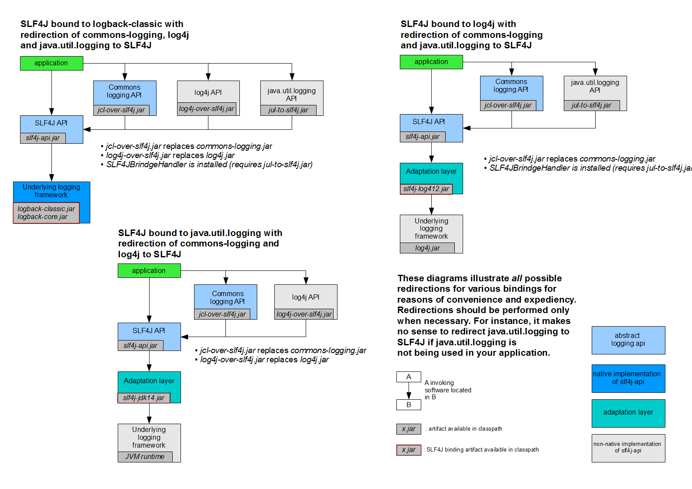
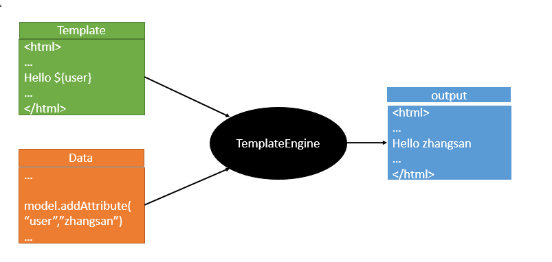
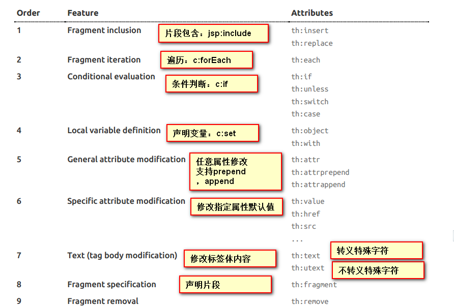

三、日志
1、日志框架
小张；开发一个大型系统；
1、System.out.println("")；将关键数据打印在控制台；去掉？写在一个文件？
2、框架来记录系统的一些运行时信息；日志框架 ； zhanglogging.jar；
3、高大上的几个功能？异步模式？自动归档？xxxx？ zhanglogging-good.jar？
4、将以前框架卸下来？换上新的框架，重新修改之前相关的API；zhanglogging-prefect.jar；
5、JDBC—数据库驱动；
写了一个统一的接口层；日志门面（日志的一个抽象层）；logging-abstract.jar；
给项目中导入具体的日志实现就行了；我们之前的日志框架都是实现的抽象层；
市面上的日志框架；
JUL、JCL、Jboss-logging、logback、log4j、log4j2、slf4j…
日志门面 （日志的抽象层）
日志实现
JCL（Jakarta Commons Logging） SLF4j（Simple Logging Facade for Java） jboss-logging Log4j JUL（java.util.logging） Log4j2 Logback
左边选一个门面（抽象层）、右边来选一个实现；
日志门面： SLF4J；
日志实现：Logback；
SpringBoot：底层是Spring框架，Spring框架默认是用JCL；‘
SpringBoot选用 SLF4j和logback；
2、SLF4j使用
以后开发的时候，日志记录方法的调用，不应该来直接调用日志的实现类，而是调用日志抽象层里面的方法；
给系统里面导入slf4j的jar和 logback的实现jar
1 2 3 4 5 6 7 8 9 import org.slf4j.Logger;import org.slf4j.LoggerFactory;public class HelloWorld public static void main (String[] args) Logger logger = LoggerFactory.getLogger(HelloWorld.class); logger.info("Hello World" ); } }
图示；
每一个日志的实现框架都有自己的配置文件。使用slf4j以后，配置文件还是做成日志实现框架自己本身的配置文件；
2、遗留问题
a（slf4j+logback）: Spring（commons-logging）、Hibernate（jboss-logging）、MyBatis、xxxx
统一日志记录，即使是别的框架和我一起统一使用slf4j进行输出？

如何让系统中所有的日志都统一到slf4j；
1、将系统中其他日志框架先排除出去；
2、用中间包来替换原有的日志框架；
3、我们导入slf4j其他的实现
3、SpringBoot日志关系
1 2 3 4 <dependency > <groupId > org.springframework.boot</groupId > <artifactId > spring-boot-starter</artifactId > </dependency >
SpringBoot使用它来做日志功能；
1 2 3 4 <dependency > <groupId > org.springframework.boot</groupId > <artifactId > spring-boot-starter-logging</artifactId > </dependency >
底层依赖关系
总结：
1）、SpringBoot底层也是使用slf4j+logback的方式进行日志记录
2）、SpringBoot也把其他的日志都替换成了slf4j；
3）、中间替换包？
1 2 3 4 5 6 @SuppressWarnings ("rawtypes" )public abstract class LogFactory static String UNSUPPORTED_OPERATION_IN_JCL_OVER_SLF4J = "http://www.slf4j.org/codes.html#unsupported_operation_in_jcl_over_slf4j" ; static LogFactory logFactory = new SLF4JLogFactory();
4）、如果我们要引入其他框架？一定要把这个框架的默认日志依赖移除掉？
Spring框架用的是commons-logging；
1 2 3 4 5 6 7 8 9 10 <dependency > <groupId > org.springframework</groupId > <artifactId > spring-core</artifactId > <exclusions > <exclusion > <groupId > commons-logging</groupId > <artifactId > commons-logging</artifactId > </exclusion > </exclusions > </dependency >
SpringBoot能自动适配所有的日志，而且底层使用slf4j+logback的方式记录日志，引入其他框架的时候，只需要把这个框架依赖的日志框架排除掉即可；
4、日志使用；
1、默认配置
SpringBoot默认帮我们配置好了日志；
1 2 3 4 5 6 7 8 9 10 11 12 13 14 15 16 17 18 Logger logger = LoggerFactory.getLogger(getClass()); @Test public void contextLoads () logger.trace("这是trace日志..." ); logger.debug("这是debug日志..." ); logger.info("这是info日志..." ); logger.warn("这是warn日志..." ); logger.error("这是error日志..." ); }
日志输出格式：
%d表示日期时间，
%thread表示线程名，
%-5level：级别从左显示5个字符宽度
%logger{50} 表示logger名字最长50个字符，否则按照句点分割。
%msg：日志消息，
%n是换行符
-->
%d{yyyy-MM-dd HH:mm:ss.SSS} [%thread] %-5level %logger{50} - %msg%n
SpringBoot修改日志的默认配置
1 2 3 4 5 6 7 8 9 10 11 12 13 14 15 logging.level.com.atguigu=trace #logging.path= # 不指定路径在当前项目下生成springboot.log日志 # 可以指定完整的路径； #logging.file=G:/springboot.log # 在当前磁盘的根路径下创建spring文件夹和里面的log文件夹；使用 spring.log 作为默认文件 logging.path=/spring/log # 在控制台输出的日志的格式 logging.pattern.console=%d{yyyy-MM-dd} [%thread] %-5level %logger{50} - %msg%n # 指定文件中日志输出的格式 logging.pattern.file=%d{yyyy-MM-dd} ``= [%thread] ``= %-5level ``= %logger{50} ```` %msg%n
logging.file
logging.path
Example
Description
(none)
(none)
只在控制台输出
指定文件名
(none)
my.log
输出日志到my.log文件
(none)
指定目录
/var/log
输出到指定目录的 spring.log 文件中
2、指定配置
给类路径下放上每个日志框架自己的配置文件即可；SpringBoot就不使用他默认配置的了
Logging System
Customization
Logback
logback-spring.xml, logback-spring.groovy, logback.xml or logback.groovy
Log4j2
log4j2-spring.xml or log4j2.xml
JDK (Java Util Logging)
logging.properties
logback.xml：直接就被日志框架识别了；
logback-spring.xml ：日志框架就不直接加载日志的配置项，由SpringBoot解析日志配置，可以使用SpringBoot的高级Profile功能
1 2 3 4 <springProfile name ="staging" > 可以指定某段配置只在某个环境下生效 </springProfile >
如：
1 2 3 4 5 6 7 8 9 10 11 12 13 14 15 16 17 18 19 <appender name ="stdout" class ="ch.qos.logback.core.ConsoleAppender" > <layout class ="ch.qos.logback.classic.PatternLayout" > <springProfile name ="dev" > <pattern > %d{yyyy-MM-dd HH:mm:ss.SSS} ----> [%thread] ---> %-5level %logger{50} - %msg%n</pattern > </springProfile > <springProfile name ="!dev" > <pattern > %d{yyyy-MM-dd HH:mm:ss.SSS} ```` [%thread] ```` %-5level %logger{50} - %msg%n</pattern > </springProfile > </layout > </appender >
如果使用logback.xml作为日志配置文件，还要使用profile功能，会有以下错误
no applicable action for [springProfile]
5、切换日志框架
可以按照slf4j的日志适配图，进行相关的切换；
slf4j+log4j的方式；
1 2 3 4 5 6 7 8 9 10 11 12 13 14 15 16 17 18 19 <dependency > <groupId > org.springframework.boot</groupId > <artifactId > spring-boot-starter-web</artifactId > <exclusions > <exclusion > <artifactId > logback-classic</artifactId > <groupId > ch.qos.logback</groupId > </exclusion > <exclusion > <artifactId > log4j-over-slf4j</artifactId > <groupId > org.slf4j</groupId > </exclusion > </exclusions > </dependency > <dependency > <groupId > org.slf4j</groupId > <artifactId > slf4j-log4j12</artifactId > </dependency >
切换为log4j2
1 2 3 4 5 6 7 8 9 10 11 12 13 14 15 <dependency > <groupId > org.springframework.boot</groupId > <artifactId > spring-boot-starter-web</artifactId > <exclusions > <exclusion > <artifactId > spring-boot-starter-logging</artifactId > <groupId > org.springframework.boot</groupId > </exclusion > </exclusions > </dependency > <dependency > <groupId > org.springframework.boot</groupId > <artifactId > spring-boot-starter-log4j2</artifactId > </dependency >
四、Web开发
1、简介
使用SpringBoot；
1）、创建SpringBoot应用，选中我们需要的模块；
2）、SpringBoot已经默认将这些场景配置好了，只需要在配置文件中指定少量配置就可以运行起来
3）、自己编写业务代码；
自动配置原理？
这个场景SpringBoot帮我们配置了什么？能不能修改？能修改哪些配置？能不能扩展？xxx
1 2 xxxxAutoConfiguration：帮我们给容器中自动配置组件； xxxxProperties:配置类来封装配置文件的内容；
2、SpringBoot对静态资源的映射规则；
1 2 3 @ConfigurationProperties (prefix = "spring.resources" , ignoreUnknownFields = false )public class ResourceProperties implements ResourceLoaderAware
1 2 3 4 5 6 7 8 9 10 11 12 13 14 15 16 17 18 19 20 21 22 23 24 25 26 27 28 29 30 31 32 33 34 35 36 37 38 39 40 41 42 43 44 45 46 47 48 49 50 51 52 53 54 55 56 57 58 59 60 61 62 63 64 WebMvcAuotConfiguration： @Override public void addResourceHandlers (ResourceHandlerRegistry registry) if (!this .resourceProperties.isAddMappings()) { logger.debug("Default resource handling disabled" ); return ; } Integer cachePeriod = this .resourceProperties.getCachePeriod(); if (!registry.hasMappingForPattern("/webjars/**" )) { customizeResourceHandlerRegistration( registry.addResourceHandler("/webjars/**" ) .addResourceLocations( "classpath:/META-INF/resources/webjars/" ) .setCachePeriod(cachePeriod)); } String staticPathPattern = this .mvcProperties.getStaticPathPattern(); if (!registry.hasMappingForPattern(staticPathPattern)) { customizeResourceHandlerRegistration( registry.addResourceHandler(staticPathPattern) .addResourceLocations( this .resourceProperties.getStaticLocations()) .setCachePeriod(cachePeriod)); } } @Bean public WelcomePageHandlerMapping welcomePageHandlerMapping ( ResourceProperties resourceProperties) return new WelcomePageHandlerMapping(resourceProperties.getWelcomePage(), this .mvcProperties.getStaticPathPattern()); } @Configuration @ConditionalOnProperty (value = "spring.mvc.favicon.enabled" , matchIfMissing = true ) public static class FaviconConfiguration private final ResourceProperties resourceProperties; public FaviconConfiguration (ResourceProperties resourceProperties) this .resourceProperties = resourceProperties; } @Bean public SimpleUrlHandlerMapping faviconHandlerMapping () SimpleUrlHandlerMapping mapping = new SimpleUrlHandlerMapping(); mapping.setOrder(Ordered.HIGHEST_PRECEDENCE + 1 ); mapping.setUrlMap(Collections.singletonMap("**/favicon.ico" , faviconRequestHandler())); return mapping; } @Bean public ResourceHttpRequestHandler faviconRequestHandler () ResourceHttpRequestHandler requestHandler = new ResourceHttpRequestHandler(); requestHandler .setLocations(this .resourceProperties.getFaviconLocations()); return requestHandler; } }
1）、所有 /webjars/** ，都去 classpath:/META-INF/resources/webjars/ 找资源；
webjars：以jar包的方式引入静态资源；
http://www.webjars.org/
localhost:8080/webjars/jquery/3.3.1/jquery.js
1 2 3 4 5 6 在访问的时候只需要写webjars下面资源的名称即可 <dependency > <groupId > org.webjars</groupId > <artifactId > jquery</artifactId > <version > 3.3.1</version > </dependency >
2）、"/**" 访问当前项目的任何资源，都去（静态资源的文件夹）找映射
1 2 3 4 5 "classpath:/META-INF/resources/", "classpath:/resources/", "classpath:/static/", "classpath:/public/" "/"：当前项目的根路径
localhost:8080/abc ``= 去静态资源文件夹里面找abc
3）、欢迎页； 静态资源文件夹下的所有index.html页面；被"/**"映射；
localhost:8080/ 找index页面
4）、所有的 **/favicon.ico 都是在静态资源文件下找；
3、模板引擎
JSP、Velocity、Freemarker、Thymeleaf

SpringBoot推荐的Thymeleaf；
语法更简单，功能更强大；
1、引入thymeleaf；
1 2 3 4 5 6 7 8 9 10 11 12 <dependency > <groupId > org.springframework.boot</groupId > <artifactId > spring-boot-starter-thymeleaf</artifactId > 2.1.6 </dependency > 切换thymeleaf版本 <properties > <thymeleaf.version > 3.0.9.RELEASE</thymeleaf.version > <thymeleaf-layout-dialect.version > 2.2.2</thymeleaf-layout-dialect.version > </properties >
2、Thymeleaf使用
1 2 3 4 5 6 7 8 9 10 11 @ConfigurationProperties (prefix = "spring.thymeleaf" )public class ThymeleafProperties private static final Charset DEFAULT_ENCODING = Charset.forName("UTF-8" ); private static final MimeType DEFAULT_CONTENT_TYPE = MimeType.valueOf("text/html" ); public static final String DEFAULT_PREFIX = "classpath:/templates/" ; public static final String DEFAULT_SUFFIX = ".html" ;
只要我们把HTML页面放在classpath:/templates/，thymeleaf就能自动渲染；
使用：
1、导入thymeleaf的名称空间
1 <html lang ="en" xmlns:th ="http://www.thymeleaf.org" >
2、使用thymeleaf语法；
1 2 3 4 5 6 7 8 9 10 11 12 <!DOCTYPE html> <html lang ="en" xmlns:th ="http://www.thymeleaf.org" > <head > <meta charset ="UTF-8" > <title > Title</title > </head > <body > <h1 > 成功！</h1 > <div th:text ="${hello}" > 这是显示欢迎信息</div > </body > </html >
3、语法规则
1）、th:text；改变当前元素里面的文本内容；
th：任意html属性；来替换原生属性的值

2）、表达式？
1 2 3 4 5 6 7 8 9 10 11 12 13 14 15 16 17 18 19 20 21 22 23 24 25 26 27 28 29 30 31 32 33 34 35 36 37 38 39 40 41 42 43 44 45 46 47 48 49 50 51 52 53 54 55 56 57 58 59 60 61 62 63 64 65 66 67 68 69 Simple expressions:（表达式语法） Variable Expressions: ${...}：获取变量值；OGNL； 1）、获取对象的属性、调用方法 2）、使用内置的基本对象： #ctx : the context object. #vars: the context variables. #locale : the context locale. #request : (only in Web Contexts) the HttpServletRequest object. #response : (only in Web Contexts) the HttpServletResponse object. #session : (only in Web Contexts) the HttpSession object. #servletContext : (only in Web Contexts) the ServletContext object. ${session.foo} 3）、内置的一些工具对象： #execInfo : information about the template being processed. #messages : methods for obtaining externalized messages inside variables expressions, in the same way as they would be obtained using #{…} syntax. #uris : methods for escaping parts of URLs/URIs #conversions : methods for executing the configured conversion service (if any). #dates : methods for java.util.Date objects: formatting, component extraction, etc. #calendars : analogous to #dates , but for java.util.Calendar objects. #numbers : methods for formatting numeric objects. #strings : methods for String objects: contains, startsWith, prepending/appending, etc. #objects : methods for objects in general. #bools : methods for boolean evaluation. #arrays : methods for arrays. #lists : methods for lists. #sets : methods for sets. #maps : methods for maps. #aggregates : methods for creating aggregates on arrays or collections. #ids : methods for dealing with id attributes that might be repeated (for example, as a result of an iteration). Selection Variable Expressions: *{...}：选择表达式：和${}在功能上是一样； 补充：配合 th:object="${session.user}： <div th:object="${session.user}"> <p>Name: <span th:text="*{firstName}">Sebastian</span>.</p> <p>Surname: <span th:text="*{lastName}">Pepper</span>.</p> <p>Nationality: <span th:text="*{nationality}">Saturn</span>.</p> </div> Message Expressions: #{...}：获取国际化内容 Link URL Expressions: @{...}：定义URL； @{/order/process(execId=${execId},execType='FAST')} Fragment Expressions: ~{...}：片段引用表达式 <div th:insert="~{commons :: main}">...</div> Literals（字面量） Text literals: 'one text' , 'Another one!' ,… Number literals: 0 , 34 , 3.0 , 12.3 ,… Boolean literals: true , false Null literal: null Literal tokens: one , sometext , main ,… Text operations:（文本操作） String concatenation: + Literal substitutions: |The name is ${name}| Arithmetic operations:（数学运算） Binary operators: + , - , * , / , % Minus sign (unary operator): - Boolean operations:（布尔运算） Binary operators: and , or Boolean negation (unary operator): ! , not Comparisons and equality:（比较运算） Comparators: > , < , >= , <= ( gt , lt , ge , le ) Equality operators: `` , != ( eq , ne ) Conditional operators:条件运算（三元运算符） If-then: (if) ? (then) If-then-else: (if) ? (then) : (else) Default: (value) ?: (defaultvalue) Special tokens: No-Operation: _
4、SpringMVC自动配置
https://docs.spring.io/spring-boot/docs/1.5.10.RELEASE/reference/htmlsingle/#boot-features-developing-web-applications
1. Spring MVC auto-configuration
Spring Boot 自动配置好了SpringMVC
以下是SpringBoot对SpringMVC的默认配置:（WebMvcAutoConfiguration）
Inclusion of ContentNegotiatingViewResolver and BeanNameViewResolver beans.
自动配置了ViewResolver（视图解析器：根据方法的返回值得到视图对象（View），视图对象决定如何渲染（转发？重定向？））
ContentNegotiatingViewResolver：组合所有的视图解析器的；
如何定制：我们可以自己给容器中添加一个视图解析器；自动的将其组合进来；
Support for serving static resources, including support for WebJars (see below).静态资源文件夹路径,webjars
Static index.html support. 静态首页访问
Custom Favicon support (see below). favicon.ico
自动注册了 of Converter, GenericConverter, Formatter beans.
Converter：转换器； public String hello(User user)：类型转换使用Converter
Formatter 格式化器； 2017.12.17``=Date；
1 2 3 4 5 @Bean @ConditionalOnProperty (prefix = "spring.mvc" , name = "date-format" )public Formatter<Date> dateFormatter () return new DateFormatter(this .mvcProperties.getDateFormat()); }
自己添加的格式化器转换器，我们只需要放在容器中即可
Support for HttpMessageConverters (see below).
HttpMessageConverter：SpringMVC用来转换Http请求和响应的；User—Json；
HttpMessageConverters 是从容器中确定；获取所有的HttpMessageConverter；
自己给容器中添加HttpMessageConverter，只需要将自己的组件注册容器中（@Bean,@Component）
Automatic registration of MessageCodesResolver (see below).定义错误代码生成规则
Automatic use of a ConfigurableWebBindingInitializer bean (see below).
我们可以配置一个ConfigurableWebBindingInitializer来替换默认的；（添加到容器）
1 2 初始化WebDataBinder； 请求数据````=JavaBean；
org.springframework.boot.autoconfigure.web ：web的所有自动场景；
If you want to keep Spring Boot MVC features, and you just want to add additional MVC configuration (interceptors, formatters, view controllers etc.) you can add your own @Configuration class of type WebMvcConfigurerAdapter, but without @EnableWebMvc. If you wish to provide custom instances of RequestMappingHandlerMapping, RequestMappingHandlerAdapter or ExceptionHandlerExceptionResolver you can declare a WebMvcRegistrationsAdapter instance providing such components.
If you want to take complete control of Spring MVC, you can add your own @Configuration annotated with @EnableWebMvc.
2、扩展SpringMVC
1 2 3 4 5 6 7 <mvc:view-controller path ="/hello" view-name ="success" /> <mvc:interceptors > <mvc:interceptor > <mvc:mapping path ="/hello" /> <bean > </bean > </mvc:interceptor > </mvc:interceptors >
编写一个配置类（@Configuration），是WebMvcConfigurerAdapter类型；不能标注@EnableWebMvc
既保留了所有的自动配置，也能用我们扩展的配置；
1 2 3 4 5 6 7 8 9 10 11 @Configuration public class MyMvcConfig extends WebMvcConfigurerAdapter @Override public void addViewControllers (ViewControllerRegistry registry) registry.addViewController("/atguigu" ).setViewName("success" ); } }
原理：
1）、WebMvcAutoConfiguration是SpringMVC的自动配置类
2）、在做其他自动配置时会导入；@Import(EnableWebMvcConfiguration .class)
1 2 3 4 5 6 7 8 9 10 11 12 13 14 15 16 17 18 @Configuration public static class EnableWebMvcConfiguration extends DelegatingWebMvcConfiguration private final WebMvcConfigurerComposite configurers = new WebMvcConfigurerComposite(); @Autowired (required = false ) public void setConfigurers (List<WebMvcConfigurer> configurers) if (!CollectionUtils.isEmpty(configurers)) { this .configurers.addWebMvcConfigurers(configurers); @Override } } }
3）、容器中所有的WebMvcConfigurer都会一起起作用；
4）、我们的配置类也会被调用；
效果：SpringMVC的自动配置和我们的扩展配置都会起作用；
3、全面接管SpringMVC；
SpringBoot对SpringMVC的自动配置不需要了，所有都是我们自己配置；所有的SpringMVC的自动配置都失效了
我们需要在配置类中添加@EnableWebMvc即可；
1 2 3 4 5 6 7 8 9 10 11 12 @EnableWebMvc @Configuration public class MyMvcConfig extends WebMvcConfigurerAdapter @Override public void addViewControllers (ViewControllerRegistry registry) registry.addViewController("/atguigu" ).setViewName("success" ); } }
原理：
为什么@EnableWebMvc自动配置就失效了；
1）@EnableWebMvc的核心
1 2 @Import (DelegatingWebMvcConfiguration.class)public @interface EnableWebMvc {
2）、
1 2 @Configuration public class DelegatingWebMvcConfiguration extends WebMvcConfigurationSupport
3）、
1 2 3 4 5 6 7 8 9 10 @Configuration @ConditionalOnWebApplication @ConditionalOnClass ({ Servlet.class, DispatcherServlet.class, WebMvcConfigurerAdapter.class }) @ConditionalOnMissingBean (WebMvcConfigurationSupport.class)@AutoConfigureOrder (Ordered.HIGHEST_PRECEDENCE + 10 )@AutoConfigureAfter ({ DispatcherServletAutoConfiguration.class, ValidationAutoConfiguration.class }) public class WebMvcAutoConfiguration
4）、@EnableWebMvc将WebMvcConfigurationSupport组件导入进来；
5）、导入的WebMvcConfigurationSupport只是SpringMVC最基本的功能；
5、如何修改SpringBoot的默认配置
模式：
1）、SpringBoot在自动配置很多组件的时候，先看容器中有没有用户自己配置的（@Bean、@Component）如果有就用用户配置的，如果没有，才自动配置；如果有些组件可以有多个（ViewResolver）将用户配置的和自己默认的组合起来；
2）、在SpringBoot中会有非常多的xxxConfigurer帮助我们进行扩展配置
3）、在SpringBoot中会有很多的xxxCustomizer帮助我们进行定制配置
6、RestfulCRUD
1）、默认访问首页
1 2 3 4 5 6 7 8 9 10 11 12 13 14 15 16 17 18 19 20 21 22 23 24 25 26 @Configuration public class MyMvcConfig extends WebMvcConfigurerAdapter @Override public void addViewControllers (ViewControllerRegistry registry) registry.addViewController("/atguigu" ).setViewName("success" ); } @Bean public WebMvcConfigurerAdapter webMvcConfigurerAdapter () WebMvcConfigurerAdapter adapter = new WebMvcConfigurerAdapter() { @Override public void addViewControllers (ViewControllerRegistry registry) registry.addViewController("/" ).setViewName("login" ); registry.addViewController("/index.html" ).setViewName("login" ); } }; return adapter; } }
2）、国际化
1）、编写国际化配置文件；
2）、使用ResourceBundleMessageSource管理国际化资源文件
3）、在页面使用fmt:message取出国际化内容
步骤：
1）、编写国际化配置文件，抽取页面需要显示的国际化消息
2）、SpringBoot自动配置好了管理国际化资源文件的组件；
1 2 3 4 5 6 7 8 9 10 11 12 13 14 15 16 17 18 19 20 21 22 23 24 25 26 27 28 @ConfigurationProperties (prefix = "spring.messages" )public class MessageSourceAutoConfiguration private String basename = "messages" ; @Bean public MessageSource messageSource () ResourceBundleMessageSource messageSource = new ResourceBundleMessageSource(); if (StringUtils.hasText(this .basename)) { messageSource.setBasenames(StringUtils.commaDelimitedListToStringArray( StringUtils.trimAllWhitespace(this .basename))); } if (this .encoding != null ) { messageSource.setDefaultEncoding(this .encoding.name()); } messageSource.setFallbackToSystemLocale(this .fallbackToSystemLocale); messageSource.setCacheSeconds(this .cacheSeconds); messageSource.setAlwaysUseMessageFormat(this .alwaysUseMessageFormat); return messageSource; }
3）、去页面获取国际化的值；
1 2 3 4 5 6 7 8 9 10 11 12 13 14 15 16 17 18 19 20 21 22 23 24 25 26 27 28 29 30 31 32 33 34 35 36 <!DOCTYPE html> <html lang ="en" xmlns:th ="http://www.thymeleaf.org" > <head > <meta http-equiv ="Content-Type" content ="text/html; charset=UTF-8" > <meta name ="viewport" content ="width=device-width, initial-scale=1, shrink-to-fit=no" > <meta name ="description" content ="" > <meta name ="author" content ="" > <title > Signin Template for Bootstrap</title > <link href ="asserts/css/bootstrap.min.css" th:href ="@{/webjars/bootstrap/4.0.0/css/bootstrap.css}" rel ="stylesheet" > <link href ="asserts/css/signin.css" th:href ="@{/asserts/css/signin.css}" rel ="stylesheet" > </head > <body class ="text-center" > <form class ="form-signin" action ="dashboard.html" > <img class ="mb-4" th:src ="@{/asserts/img/bootstrap-solid.svg}" src ="asserts/img/bootstrap-solid.svg" alt ="" width ="72" height ="72" > <h1 class ="h3 mb-3 font-weight-normal" th:text ="#{login.tip}" > Please sign in</h1 > <label class ="sr-only" th:text ="#{login.username}" > Username</label > <input type ="text" class ="form-control" placeholder ="Username" th:placeholder ="#{login.username}" required ="" autofocus ="" > <label class ="sr-only" th:text ="#{login.password}" > Password</label > <input type ="password" class ="form-control" placeholder ="Password" th:placeholder ="#{login.password}" required ="" > <div class ="checkbox mb-3" > <label > <input type ="checkbox" value ="remember-me" /> [[#{login.remember}]] </label > </div > <button class ="btn btn-lg btn-primary btn-block" type ="submit" th:text ="#{login.btn}" > Sign in</button > <p class ="mt-5 mb-3 text-muted" > © 2017-2018</p > <a class ="btn btn-sm" > 中文</a > <a class ="btn btn-sm" > English</a > </form > </body > </html >
效果：根据浏览器语言设置的信息切换了国际化；
原理：
国际化Locale（区域信息对象）；LocaleResolver（获取区域信息对象）；
1 2 3 4 5 6 7 8 9 10 11 12 13 @Bean @ConditionalOnMissingBean @ConditionalOnProperty (prefix = "spring.mvc" , name = "locale" ) public LocaleResolver localeResolver () if (this .mvcProperties .getLocaleResolver() `` WebMvcProperties.LocaleResolver.FIXED) { return new FixedLocaleResolver(this .mvcProperties.getLocale()); } AcceptHeaderLocaleResolver localeResolver = new AcceptHeaderLocaleResolver(); localeResolver.setDefaultLocale(this .mvcProperties.getLocale()); return localeResolver; } 默认的就是根据请求头带来的区域信息获取Locale进行国际化
4）、点击链接切换国际化
1 2 3 4 5 6 7 8 9 10 11 12 13 14 15 16 17 18 19 20 21 22 23 24 25 26 27 28 public class MyLocaleResolver implements LocaleResolver @Override public Locale resolveLocale (HttpServletRequest request) String l = request.getParameter("l" ); Locale locale = Locale.getDefault(); if (!StringUtils.isEmpty(l)){ String[] split = l.split("_" ); locale = new Locale(split[0 ],split[1 ]); } return locale; } @Override public void setLocale (HttpServletRequest request, HttpServletResponse response, Locale locale) } } @Bean public LocaleResolver localeResolver () return new MyLocaleResolver(); } }
3）、登陆
开发期间模板引擎页面修改以后，要实时生效
1）、禁用模板引擎的缓存
1 2 # 禁用缓存 spring.thymeleaf.cache=false
2）、页面修改完成以后ctrl+f9：重新编译；
登陆错误消息的显示
1 <p style ="color: red" th:text ="${msg}" th:if ="${not #strings.isEmpty(msg)}" > </p >
4）、拦截器进行登陆检查
拦截器
1 2 3 4 5 6 7 8 9 10 11 12 13 14 15 16 17 18 19 20 21 22 23 24 25 26 27 28 29 30 31 public class LoginHandlerInterceptor implements HandlerInterceptor @Override public boolean preHandle (HttpServletRequest request, HttpServletResponse response, Object handler) throws Exception Object user = request.getSession().getAttribute("loginUser" ); if (user `` null ){ request.setAttribute("msg" ,"没有权限请先登陆" ); request.getRequestDispatcher("/index.html" ).forward(request,response); return false ; }else { return true ; } } @Override public void postHandle (HttpServletRequest request, HttpServletResponse response, Object handler, ModelAndView modelAndView) throws Exception } @Override public void afterCompletion (HttpServletRequest request, HttpServletResponse response, Object handler, Exception ex) throws Exception } }
注册拦截器
1 2 3 4 5 6 7 8 9 10 11 12 13 14 15 16 17 18 19 20 21 22 23 @Bean public WebMvcConfigurerAdapter webMvcConfigurerAdapter () WebMvcConfigurerAdapter adapter = new WebMvcConfigurerAdapter() { @Override public void addViewControllers (ViewControllerRegistry registry) registry.addViewController("/" ).setViewName("login" ); registry.addViewController("/index.html" ).setViewName("login" ); registry.addViewController("/main.html" ).setViewName("dashboard" ); } @Override public void addInterceptors (InterceptorRegistry registry) registry.addInterceptor(new LoginHandlerInterceptor()).addPathPatterns("/**" ) .excludePathPatterns("/index.html" ,"/" ,"/user/login" ); } }; return adapter; }
5）、CRUD-员工列表
实验要求：
1）、RestfulCRUD：CRUD满足Rest风格；
URI： /资源名称/资源标识 HTTP请求方式区分对资源CRUD操作
普通CRUD（uri来区分操作）
RestfulCRUD
查询
getEmp
emp—GET
添加
addEmp?xxx
emp—POST
修改
updateEmp?id=xxx&xxx=xx
emp/{id}—PUT
删除
deleteEmp?id=1
emp/{id}—DELETE
2）、实验的请求架构;
实验功能
请求URI
请求方式
查询所有员工
emps
GET
查询某个员工(来到修改页面)
emp/1
GET
来到添加页面
emp
GET
添加员工
emp
POST
来到修改页面（查出员工进行信息回显）
emp/1
GET
修改员工
emp
PUT
删除员工
emp/1
DELETE
3）、员工列表：
thymeleaf公共页面元素抽取
1 2 3 4 5 6 7 8 9 10 11 12 13 14 1、抽取公共片段 <div th:fragment ="copy" > © 2011 The Good Thymes Virtual Grocery </div > 2、引入公共片段 <div th:insert ="~{footer :: copy}" > </div > ~{templatename::selector}：模板名::选择器 ~{templatename::fragmentname}:模板名::片段名 3、默认效果： insert的公共片段在div标签中 如果使用th:insert等属性进行引入，可以不用写~{}： 行内写法可以加上：[[~{}]];[(~{})]；
三种引入公共片段的th属性：
th:insert ：将公共片段整个插入到声明引入的元素中
th:replace ：将声明引入的元素替换为公共片段
th:include ：将被引入的片段的内容包含进这个标签中
1 2 3 4 5 6 7 8 9 10 11 12 13 14 15 16 17 18 19 20 21 22 23 <footer th:fragment ="copy" > © 2011 The Good Thymes Virtual Grocery </footer > 引入方式 <div th:insert ="footer :: copy" > </div > <div th:replace ="footer :: copy" > </div > <div th:include ="footer :: copy" > </div > 效果 <div > <footer > © 2011 The Good Thymes Virtual Grocery </footer > </div > <footer > © 2011 The Good Thymes Virtual Grocery </footer > <div > © 2011 The Good Thymes Virtual Grocery </div >
引入片段的时候传入参数：
1 2 3 4 5 6 7 8 9 10 11 12 13 14 15 16 17 18 <nav class ="col-md-2 d-none d-md-block bg-light sidebar" id ="sidebar" > <div class ="sidebar-sticky" > <ul class ="nav flex-column" > <li class ="nav-item" > <a class ="nav-link active" th:class ="${activeUri``'main.html'?'nav-link active':'nav-link'}" href ="#" th:href ="@{/main.html}" > <svg xmlns ="http://www.w3.org/2000/svg" width ="24" height ="24" viewBox ="0 0 24 24" fill ="none" stroke ="currentColor" stroke-width ="2" stroke-linecap ="round" stroke-linejoin ="round" class ="feather feather-home" > <path d ="M3 9l9-7 9 7v11a2 2 0 0 1-2 2H5a2 2 0 0 1-2-2z" > </path > <polyline points ="9 22 9 12 15 12 15 22" > </polyline > </svg > Dashboard <span class ="sr-only" > (current)</span > </a > </li > <div th:replace ="commons/bar::#sidebar(activeUri='emps')" > </div >
6）、CRUD-员工添加
添加页面
1 2 3 4 5 6 7 8 9 10 11 12 13 14 15 16 17 18 19 20 21 22 23 24 25 26 27 28 29 30 31 32 33 34 35 36 <form > <div class ="form-group" > <label > LastName</label > <input type ="text" class ="form-control" placeholder ="zhangsan" > </div > <div class ="form-group" > <label > Email</label > <input type ="email" class ="form-control" placeholder ="zhangsan@atguigu.com" > </div > <div class ="form-group" > <label > Gender</label > <br /> <div class ="form-check form-check-inline" > <input class ="form-check-input" type ="radio" name ="gender" value ="1" > <label class ="form-check-label" > 男</label > </div > <div class ="form-check form-check-inline" > <input class ="form-check-input" type ="radio" name ="gender" value ="0" > <label class ="form-check-label" > 女</label > </div > </div > <div class ="form-group" > <label > department</label > <select class ="form-control" > <option > 1</option > <option > 2</option > <option > 3</option > <option > 4</option > <option > 5</option > </select > </div > <div class ="form-group" > <label > Birth</label > <input type ="text" class ="form-control" placeholder ="zhangsan" > </div > <button type ="submit" class ="btn btn-primary" > 添加</button > </form >
提交的数据格式不对：生日：日期；
2017-12-12；2017/12/12；2017.12.12；
日期的格式化；SpringMVC将页面提交的值需要转换为指定的类型;
2017-12-12—Date； 类型转换，格式化;
默认日期是按照/的方式；
7）、CRUD-员工修改
修改添加二合一表单
1 2 3 4 5 6 7 8 9 10 11 12 13 14 15 16 17 18 19 20 21 22 23 24 25 26 27 28 29 30 31 32 33 34 35 36 37 38 39 40 41 42 <form th:action ="@{/emp}" method ="post" > <input type ="hidden" name ="_method" value ="put" th:if ="${emp!=null}" /> <input type ="hidden" name ="id" th:if ="${emp!=null}" th:value ="${emp.id}" > <div class ="form-group" > <label > LastName</label > <input name ="lastName" type ="text" class ="form-control" placeholder ="zhangsan" th:value ="${emp!=null}?${emp.lastName}" > </div > <div class ="form-group" > <label > Email</label > <input name ="email" type ="email" class ="form-control" placeholder ="zhangsan@atguigu.com" th:value ="${emp!=null}?${emp.email}" > </div > <div class ="form-group" > <label > Gender</label > <br /> <div class ="form-check form-check-inline" > <input class ="form-check-input" type ="radio" name ="gender" value ="1" th:checked ="${emp!=null}?${emp.gender``1}" > <label class ="form-check-label" > 男</label > </div > <div class ="form-check form-check-inline" > <input class ="form-check-input" type ="radio" name ="gender" value ="0" th:checked ="${emp!=null}?${emp.gender``0}" > <label class ="form-check-label" > 女</label > </div > </div > <div class ="form-group" > <label > department</label > <select class ="form-control" name ="department.id" > <option th:selected ="${emp!=null}?${dept.id `` emp.department.id}" th:value ="${dept.id}" th:each ="dept:${depts}" th:text ="${dept.departmentName}" > 1</option > </select > </div > <div class ="form-group" > <label > Birth</label > <input name ="birth" type ="text" class ="form-control" placeholder ="zhangsan" th:value ="${emp!=null}?${#dates.format(emp.birth, 'yyyy-MM-dd HH:mm')}" > </div > <button type ="submit" class ="btn btn-primary" th:text ="${emp!=null}?'修改':'添加'" > 添加</button > </form >
8）、CRUD-员工删除
1 2 3 4 5 6 7 8 9 10 11 12 13 14 15 16 17 18 19 20 21 <tr th:each ="emp:${emps}" > <td th:text ="${emp.id}" > </td > <td > [[${emp.lastName}]]</td > <td th:text ="${emp.email}" > </td > <td th:text ="${emp.gender}``0?'女':'男'" > </td > <td th:text ="${emp.department.departmentName}" > </td > <td th:text ="${#dates.format(emp.birth, 'yyyy-MM-dd HH:mm')}" > </td > <td > <a class ="btn btn-sm btn-primary" th:href ="@{/emp/}+${emp.id}" > 编辑</a > <button th:attr ="del_uri=@{/emp/}+${emp.id}" class ="btn btn-sm btn-danger deleteBtn" > 删除</button > </td > </tr > <script > $(".deleteBtn" ).click(function ( $("#deleteEmpForm" ).attr("action" ,$(this ).attr("del_uri" )).submit(); return false ; }); </script >
7、错误处理机制
1）、SpringBoot默认的错误处理机制
默认效果：
1）、浏览器，返回一个默认的错误页面
浏览器发送请求的请求头：
2）、如果是其他客户端，默认响应一个json数据
原理：
可以参照ErrorMvcAutoConfiguration；错误处理的自动配置；
给容器中添加了以下组件
1、DefaultErrorAttributes：
1 2 3 4 5 6 7 8 9 10 11 帮我们在页面共享信息； @Override public Map<String, Object> getErrorAttributes (RequestAttributes requestAttributes, boolean includeStackTrace) Map<String, Object> errorAttributes = new LinkedHashMap<String, Object>(); errorAttributes.put("timestamp" , new Date()); addStatus(errorAttributes, requestAttributes); addErrorDetails(errorAttributes, requestAttributes, includeStackTrace); addPath(errorAttributes, requestAttributes); return errorAttributes; }
2、BasicErrorController：处理默认/error请求
1 2 3 4 5 6 7 8 9 10 11 12 13 14 15 16 17 18 19 20 21 22 23 24 25 @Controller @RequestMapping ("${server.error.path:${error.path:/error}}" )public class BasicErrorController extends AbstractErrorController @RequestMapping (produces = "text/html" ) public ModelAndView errorHtml (HttpServletRequest request, HttpServletResponse response) HttpStatus status = getStatus(request); Map<String, Object> model = Collections.unmodifiableMap(getErrorAttributes( request, isIncludeStackTrace(request, MediaType.TEXT_HTML))); response.setStatus(status.value()); ModelAndView modelAndView = resolveErrorView(request, response, status, model); return (modelAndView `` null ? new ModelAndView("error" , model) : modelAndView); } @RequestMapping @ResponseBody public ResponseEntity<Map<String, Object>> error(HttpServletRequest request) { Map<String, Object> body = getErrorAttributes(request, isIncludeStackTrace(request, MediaType.ALL)); HttpStatus status = getStatus(request); return new ResponseEntity<Map<String, Object>>(body, status); }
3、ErrorPageCustomizer：
1 2 @Value ("${error.path:/error}" )private String path = "/error" ; 系统出现错误以后来到error请求进行处理；（web.xml注册的错误页面规则）
4、DefaultErrorViewResolver：
1 2 3 4 5 6 7 8 9 10 11 12 13 14 15 16 17 18 19 20 21 22 23 24 @Override public ModelAndView resolveErrorView (HttpServletRequest request, HttpStatus status, Map<String, Object> model) ModelAndView modelAndView = resolve(String.valueOf(status), model); if (modelAndView `` null && SERIES_VIEWS.containsKey(status.series())) { modelAndView = resolve(SERIES_VIEWS.get(status.series()), model); } return modelAndView; } private ModelAndView resolve (String viewName, Map<String, Object> model) String errorViewName = "error/" + viewName; TemplateAvailabilityProvider provider = this .templateAvailabilityProviders .getProvider(errorViewName, this .applicationContext); if (provider != null ) { return new ModelAndView(errorViewName, model); } return resolveResource(errorViewName, model); }
步骤：
一但系统出现4xx或者5xx之类的错误；ErrorPageCustomizer就会生效（定制错误的响应规则）；就会来到/error请求；就会被BasicErrorController 处理；
1）响应页面；去哪个页面是由DefaultErrorViewResolver 解析得到的；
1 2 3 4 5 6 7 8 9 10 11 protected ModelAndView resolveErrorView (HttpServletRequest request, HttpServletResponse response, HttpStatus status, Map<String, Object> model) for (ErrorViewResolver resolver : this .errorViewResolvers) { ModelAndView modelAndView = resolver.resolveErrorView(request, status, model); if (modelAndView != null ) { return modelAndView; } } return null ; }
2）、如果定制错误响应：
1）、如何定制错误的页面； 1）、有模板引擎的情况下；error/状态码; 【将错误页面命名为 错误状态码.html 放在模板引擎文件夹里面的 error文件夹下】，发生此状态码的错误就会来到 对应的页面；
我们可以使用4xx和5xx作为错误页面的文件名来匹配这种类型的所有错误，精确优先（优先寻找精确的状态码.html）；
页面能获取的信息；
timestamp：时间戳
status：状态码
error：错误提示
exception：异常对象
message：异常消息
errors：JSR303数据校验的错误都在这里
2）、没有模板引擎（模板引擎找不到这个错误页面），静态资源文件夹下找；
3）、以上都没有错误页面，就是默认来到SpringBoot默认的错误提示页面；
2）、如何定制错误的json数据；
1）、自定义异常处理&返回定制json数据；
1 2 3 4 5 6 7 8 9 10 11 12 13 @ControllerAdvice public class MyExceptionHandler @ResponseBody @ExceptionHandler (UserNotExistException.class) public Map<String,Object> handleException (Exception e) Map<String,Object> map = new HashMap<>(); map.put("code" ,"user.notexist" ); map.put("message" ,e.getMessage()); return map; } }
2）、转发到/error进行自适应响应效果处理
1 2 3 4 5 6 7 8 9 10 11 12 13 14 @ExceptionHandler (UserNotExistException.class) public String handleException (Exception e, HttpServletRequest request) Map<String,Object> map = new HashMap<>(); request.setAttribute("javax.servlet.error.status_code" ,500 ); map.put("code" ,"user.notexist" ); map.put("message" ,e.getMessage()); return "forward:/error" ; }
3）、将我们的定制数据携带出去；
出现错误以后，会来到/error请求，会被BasicErrorController处理，响应出去可以获取的数据是由getErrorAttributes得到的（是AbstractErrorController（ErrorController）规定的方法）；
1、完全来编写一个ErrorController的实现类【或者是编写AbstractErrorController的子类】，放在容器中；
2、页面上能用的数据，或者是json返回能用的数据都是通过errorAttributes.getErrorAttributes得到；
容器中DefaultErrorAttributes.getErrorAttributes()；默认进行数据处理的；
自定义ErrorAttributes
1 2 3 4 5 6 7 8 9 10 11 @Component public class MyErrorAttributes extends DefaultErrorAttributes @Override public Map<String, Object> getErrorAttributes (RequestAttributes requestAttributes, boolean includeStackTrace) Map<String, Object> map = super .getErrorAttributes(requestAttributes, includeStackTrace); map.put("company" ,"atguigu" ); return map; } }
最终的效果：响应是自适应的，可以通过定制ErrorAttributes改变需要返回的内容，
8、配置嵌入式Servlet容器
SpringBoot默认使用Tomcat作为嵌入式的Servlet容器；
问题？
1）、如何定制和修改Servlet容器的相关配置；
1、修改和server有关的配置（ServerProperties【也是EmbeddedServletContainerCustomizer】）；
1 2 3 4 5 6 7 8 9 server.port=8081 server.context-path=/crud server.tomcat.uri-encoding=UTF-8 //通用的Servlet容器设置 server.xxx //Tomcat的设置 server.tomcat.xxx
2、编写一个EmbeddedServletContainerCustomizer ：嵌入式的Servlet容器的定制器；来修改Servlet容器的配置
1 2 3 4 5 6 7 8 9 10 11 @Bean public EmbeddedServletContainerCustomizer embeddedServletContainerCustomizer () return new EmbeddedServletContainerCustomizer() { @Override public void customize (ConfigurableEmbeddedServletContainer container) container.setPort(8083 ); } }; }
2）、注册Servlet三大组件【Servlet、Filter、Listener】
由于SpringBoot默认是以jar包的方式启动嵌入式的Servlet容器来启动SpringBoot的web应用，没有web.xml文件。
注册三大组件用以下方式
ServletRegistrationBean
1 2 3 4 5 6 @Bean public ServletRegistrationBean myServlet () ServletRegistrationBean registrationBean = new ServletRegistrationBean(new MyServlet(),"/myServlet" ); return registrationBean; }
FilterRegistrationBean
1 2 3 4 5 6 7 @Bean public FilterRegistrationBean myFilter () FilterRegistrationBean registrationBean = new FilterRegistrationBean(); registrationBean.setFilter(new MyFilter()); registrationBean.setUrlPatterns(Arrays.asList("/hello" ,"/myServlet" )); return registrationBean; }
ServletListenerRegistrationBean
1 2 3 4 5 @Bean public ServletListenerRegistrationBean myListener () ServletListenerRegistrationBean<MyListener> registrationBean = new ServletListenerRegistrationBean<>(new MyListener()); return registrationBean; }
SpringBoot帮我们自动SpringMVC的时候，自动的注册SpringMVC的前端控制器；DIspatcherServlet；
DispatcherServletAutoConfiguration中：
1 2 3 4 5 6 7 8 9 10 11 12 13 14 15 16 17 @Bean (name = DEFAULT_DISPATCHER_SERVLET_REGISTRATION_BEAN_NAME)@ConditionalOnBean (value = DispatcherServlet.class, name = DEFAULT_DISPATCHER_SERVLET_BEAN_NAME)public ServletRegistrationBean dispatcherServletRegistration ( DispatcherServlet dispatcherServlet) ServletRegistrationBean registration = new ServletRegistrationBean( dispatcherServlet, this .serverProperties.getServletMapping()); registration.setName(DEFAULT_DISPATCHER_SERVLET_BEAN_NAME); registration.setLoadOnStartup( this .webMvcProperties.getServlet().getLoadOnStartup()); if (this .multipartConfig != null ) { registration.setMultipartConfig(this .multipartConfig); } return registration; }
2）、SpringBoot能不能支持其他的Servlet容器；
3）、替换为其他嵌入式Servlet容器
默认支持：
Tomcat（默认使用）
1 2 3 4 5 <dependency > <groupId > org.springframework.boot</groupId > <artifactId > spring-boot-starter-web</artifactId > 引入web模块默认就是使用嵌入式的Tomcat作为Servlet容器； </dependency >
Jetty
1 2 3 4 5 6 7 8 9 10 11 12 13 14 15 16 17 <dependency > <groupId > org.springframework.boot</groupId > <artifactId > spring-boot-starter-web</artifactId > <exclusions > <exclusion > <artifactId > spring-boot-starter-tomcat</artifactId > <groupId > org.springframework.boot</groupId > </exclusion > </exclusions > </dependency > <dependency > <artifactId > spring-boot-starter-jetty</artifactId > <groupId > org.springframework.boot</groupId > </dependency >
Undertow
1 2 3 4 5 6 7 8 9 10 11 12 13 14 15 16 17 <dependency > <groupId > org.springframework.boot</groupId > <artifactId > spring-boot-starter-web</artifactId > <exclusions > <exclusion > <artifactId > spring-boot-starter-tomcat</artifactId > <groupId > org.springframework.boot</groupId > </exclusion > </exclusions > </dependency > <dependency > <artifactId > spring-boot-starter-undertow</artifactId > <groupId > org.springframework.boot</groupId > </dependency >
4）、嵌入式Servlet容器自动配置原理；
EmbeddedServletContainerAutoConfiguration：嵌入式的Servlet容器自动配置？
1 2 3 4 5 6 7 8 9 10 11 12 13 14 15 16 17 18 19 20 21 22 23 24 25 26 27 28 29 30 31 32 33 34 35 36 37 38 39 40 41 42 43 44 45 46 47 48 49 50 51 @AutoConfigureOrder (Ordered.HIGHEST_PRECEDENCE)@Configuration @ConditionalOnWebApplication @Import (BeanPostProcessorsRegistrar.class)public class EmbeddedServletContainerAutoConfiguration @Configuration @ConditionalOnClass ({ Servlet.class, Tomcat.class }) @ConditionalOnMissingBean (value = EmbeddedServletContainerFactory.class, search = SearchStrategy.CURRENT) public static class EmbeddedTomcat @Bean public TomcatEmbeddedServletContainerFactory tomcatEmbeddedServletContainerFactory () return new TomcatEmbeddedServletContainerFactory(); } } @Configuration @ConditionalOnClass ({ Servlet.class, Server.class, Loader.class, WebAppContext.class }) @ConditionalOnMissingBean (value = EmbeddedServletContainerFactory.class, search = SearchStrategy.CURRENT) public static class EmbeddedJetty @Bean public JettyEmbeddedServletContainerFactory jettyEmbeddedServletContainerFactory () return new JettyEmbeddedServletContainerFactory(); } } @Configuration @ConditionalOnClass ({ Servlet.class, Undertow.class, SslClientAuthMode.class }) @ConditionalOnMissingBean (value = EmbeddedServletContainerFactory.class, search = SearchStrategy.CURRENT) public static class EmbeddedUndertow @Bean public UndertowEmbeddedServletContainerFactory undertowEmbeddedServletContainerFactory () return new UndertowEmbeddedServletContainerFactory(); } }
1）、EmbeddedServletContainerFactory（嵌入式Servlet容器工厂）
1 2 3 4 5 6 7 public interface EmbeddedServletContainerFactory EmbeddedServletContainer getEmbeddedServletContainer ( ServletContextInitializer... initializers) }
2）、EmbeddedServletContainer：（嵌入式的Servlet容器）
3）、以TomcatEmbeddedServletContainerFactory 为例
1 2 3 4 5 6 7 8 9 10 11 12 13 14 15 16 17 18 19 20 21 22 23 24 @Override public EmbeddedServletContainer getEmbeddedServletContainer ( ServletContextInitializer... initializers) Tomcat tomcat = new Tomcat(); File baseDir = (this .baseDirectory != null ? this .baseDirectory : createTempDir("tomcat" )); tomcat.setBaseDir(baseDir.getAbsolutePath()); Connector connector = new Connector(this .protocol); tomcat.getService().addConnector(connector); customizeConnector(connector); tomcat.setConnector(connector); tomcat.getHost().setAutoDeploy(false ); configureEngine(tomcat.getEngine()); for (Connector additionalConnector : this .additionalTomcatConnectors) { tomcat.getService().addConnector(additionalConnector); } prepareContext(tomcat.getHost(), initializers); return getTomcatEmbeddedServletContainer(tomcat); }
4）、我们对嵌入式容器的配置修改是怎么生效？
1 ServerProperties、EmbeddedServletContainerCustomizer
EmbeddedServletContainerCustomizer ：定制器帮我们修改了Servlet容器的配置？
怎么修改的原理？
5）、容器中导入了EmbeddedServletContainerCustomizerBeanPostProcessor
1 2 3 4 5 6 7 8 9 10 11 12 13 14 15 16 17 18 19 20 21 22 23 24 25 26 27 28 29 30 31 32 33 34 35 36 37 @Override public Object postProcessBeforeInitialization (Object bean, String beanName) throws BeansException { if (bean instanceof ConfigurableEmbeddedServletContainer) { postProcessBeforeInitialization((ConfigurableEmbeddedServletContainer) bean); } return bean; } private void postProcessBeforeInitialization ( ConfigurableEmbeddedServletContainer bean) for (EmbeddedServletContainerCustomizer customizer : getCustomizers()) { customizer.customize(bean); } } private Collection<EmbeddedServletContainerCustomizer> getCustomizers () if (this .customizers `` null ) { this .customizers = new ArrayList<EmbeddedServletContainerCustomizer>( this .beanFactory .getBeansOfType(EmbeddedServletContainerCustomizer.class, false , false ) .values()); Collections.sort(this .customizers, AnnotationAwareOrderComparator.INSTANCE); this .customizers = Collections.unmodifiableList(this .customizers); } return this .customizers; } ServerProperties也是定制器
步骤：
1）、SpringBoot根据导入的依赖情况，给容器中添加相应的EmbeddedServletContainerFactory【TomcatEmbeddedServletContainerFactory】
2）、容器中某个组件要创建对象就会惊动后置处理器；EmbeddedServletContainerCustomizerBeanPostProcessor；
只要是嵌入式的Servlet容器工厂，后置处理器就工作；
3）、后置处理器，从容器中获取所有的EmbeddedServletContainerCustomizer ，调用定制器的定制方法
###5）、嵌入式Servlet容器启动原理；
什么时候创建嵌入式的Servlet容器工厂？什么时候获取嵌入式的Servlet容器并启动Tomcat；
获取嵌入式的Servlet容器工厂：
1）、SpringBoot应用启动运行run方法
2）、refreshContext(context);SpringBoot刷新IOC容器【创建IOC容器对象，并初始化容器，创建容器中的每一个组件】；如果是web应用创建AnnotationConfigEmbeddedWebApplicationContext ，否则：AnnotationConfigApplicationContext
3）、refresh(context);刷新刚才创建好的ioc容器；
1 2 3 4 5 6 7 8 9 10 11 12 13 14 15 16 17 18 19 20 21 22 23 24 25 26 27 28 29 30 31 32 33 34 35 36 37 38 39 40 41 42 43 44 45 46 47 48 49 50 51 52 53 54 55 56 57 58 59 60 61 62 63 public void refresh () throws BeansException, IllegalStateException synchronized (this .startupShutdownMonitor) { prepareRefresh(); ConfigurableListableBeanFactory beanFactory = obtainFreshBeanFactory(); prepareBeanFactory(beanFactory); try { postProcessBeanFactory(beanFactory); invokeBeanFactoryPostProcessors(beanFactory); registerBeanPostProcessors(beanFactory); initMessageSource(); initApplicationEventMulticaster(); onRefresh(); registerListeners(); finishBeanFactoryInitialization(beanFactory); finishRefresh(); } catch (BeansException ex) { if (logger.isWarnEnabled()) { logger.warn("Exception encountered during context initialization - " + "cancelling refresh attempt: " + ex); } destroyBeans(); cancelRefresh(ex); throw ex; } finally { resetCommonCaches(); } } }
4）、 onRefresh(); web的ioc容器重写了onRefresh方法
5）、webioc容器会创建嵌入式的Servlet容器；createEmbeddedServletContainer ();
6）、获取嵌入式的Servlet容器工厂：
EmbeddedServletContainerFactory containerFactory = getEmbeddedServletContainerFactory();
从ioc容器中获取EmbeddedServletContainerFactory 组件；TomcatEmbeddedServletContainerFactory 创建对象，后置处理器一看是这个对象，就获取所有的定制器来先定制Servlet容器的相关配置；
7）、使用容器工厂获取嵌入式的Servlet容器 ：this.embeddedServletContainer = containerFactory .getEmbeddedServletContainer(getSelfInitializer());
8）、嵌入式的Servlet容器创建对象并启动Servlet容器；
先启动嵌入式的Servlet容器，再将ioc容器中剩下没有创建出的对象获取出来；
IOC容器启动创建嵌入式的Servlet容器
9、使用外置的Servlet容器
嵌入式Servlet容器：应用打成可执行的jar
优点：简单、便携；
缺点：默认不支持JSP、优化定制比较复杂（使用定制器【ServerProperties、自定义EmbeddedServletContainerCustomizer】，自己编写嵌入式Servlet容器的创建工厂【EmbeddedServletContainerFactory】）；
外置的Servlet容器：外面安装Tomcat—应用war包的方式打包；
步骤
1）、必须创建一个war项目；（利用idea创建好目录结构）
2）、将嵌入式的Tomcat指定为provided；
1 2 3 4 5 <dependency > <groupId > org.springframework.boot</groupId > <artifactId > spring-boot-starter-tomcat</artifactId > <scope > provided</scope > </dependency >
3）、必须编写一个SpringBootServletInitializer 的子类，并调用configure方法
1 2 3 4 5 6 7 8 9 public class ServletInitializer extends SpringBootServletInitializer @Override protected SpringApplicationBuilder configure (SpringApplicationBuilder application) return application.sources(SpringBoot04WebJspApplication.class); } }
4）、启动服务器就可以使用；
原理
jar包：执行SpringBoot主类的main方法，启动ioc容器，创建嵌入式的Servlet容器；
war包：启动服务器，服务器启动SpringBoot应用 【SpringBootServletInitializer】，启动ioc容器；
servlet3.0（Spring注解版）：
8.2.4 Shared libraries / runtimes pluggability：
规则：
1）、服务器启动（web应用启动）会创建当前web应用里面每一个jar包里面ServletContainerInitializer实例：
2）、ServletContainerInitializer的实现放在jar包的META-INF/services文件夹下，有一个名为javax.servlet.ServletContainerInitializer的文件，内容就是ServletContainerInitializer的实现类的全类名
3）、还可以使用@HandlesTypes，在应用启动的时候加载我们感兴趣的类；
流程：
1）、启动Tomcat
2）、org\springframework\spring-web\4.3.14.RELEASE\spring-web-4.3.14.RELEASE.jar!\META-INF\services\javax.servlet.ServletContainerInitializer：
Spring的web模块里面有这个文件：org.springframework.web.SpringServletContainerInitializer
3）、SpringServletContainerInitializer将@HandlesTypes(WebApplicationInitializer.class)标注的所有这个类型的类都传入到onStartup方法的Set<Class<?>>；为这些WebApplicationInitializer类型的类创建实例；
4）、每一个WebApplicationInitializer都调用自己的onStartup；
5）、相当于我们的SpringBootServletInitializer的类会被创建对象，并执行onStartup方法
6）、SpringBootServletInitializer实例执行onStartup的时候会createRootApplicationContext；创建容器
1 2 3 4 5 6 7 8 9 10 11 12 13 14 15 16 17 18 19 20 21 22 23 24 25 26 27 28 29 30 31 32 33 34 35 36 37 38 protected WebApplicationContext createRootApplicationContext ( ServletContext servletContext) SpringApplicationBuilder builder = createSpringApplicationBuilder(); StandardServletEnvironment environment = new StandardServletEnvironment(); environment.initPropertySources(servletContext, null ); builder.environment(environment); builder.main(getClass()); ApplicationContext parent = getExistingRootWebApplicationContext(servletContext); if (parent != null ) { this .logger.info("Root context already created (using as parent)." ); servletContext.setAttribute( WebApplicationContext.ROOT_WEB_APPLICATION_CONTEXT_ATTRIBUTE, null ); builder.initializers(new ParentContextApplicationContextInitializer(parent)); } builder.initializers( new ServletContextApplicationContextInitializer(servletContext)); builder.contextClass(AnnotationConfigEmbeddedWebApplicationContext.class); builder = configure(builder); SpringApplication application = builder.build(); if (application.getSources().isEmpty() && AnnotationUtils .findAnnotation(getClass(), Configuration.class) != null ) { application.getSources().add(getClass()); } Assert.state(!application.getSources().isEmpty(), "No SpringApplication sources have been defined. Either override the " + "configure method or add an @Configuration annotation" ); if (this .registerErrorPageFilter) { application.getSources().add(ErrorPageFilterConfiguration.class); } return run(application); }
7）、Spring的应用就启动并且创建IOC容器
1 2 3 4 5 6 7 8 9 10 11 12 13 14 15 16 17 18 19 20 21 22 23 24 25 26 27 28 29 30 31 32 33 34 35 public ConfigurableApplicationContext run (String... args) StopWatch stopWatch = new StopWatch(); stopWatch.start(); ConfigurableApplicationContext context = null ; FailureAnalyzers analyzers = null ; configureHeadlessProperty(); SpringApplicationRunListeners listeners = getRunListeners(args); listeners.starting(); try { ApplicationArguments applicationArguments = new DefaultApplicationArguments( args); ConfigurableEnvironment environment = prepareEnvironment(listeners, applicationArguments); Banner printedBanner = printBanner(environment); context = createApplicationContext(); analyzers = new FailureAnalyzers(context); prepareContext(context, environment, listeners, applicationArguments, printedBanner); refreshContext(context); afterRefresh(context, applicationArguments); listeners.finished(context, null ); stopWatch.stop(); if (this .logStartupInfo) { new StartupInfoLogger(this .mainApplicationClass) .logStarted(getApplicationLog(), stopWatch); } return context; } catch (Throwable ex) { handleRunFailure(context, listeners, analyzers, ex); throw new IllegalStateException(ex); } }
启动Servlet容器，再启动SpringBoot应用
五、Docker
1、简介
Docker 是一个开源的应用容器引擎；是一个轻量级容器技术；
Docker支持将软件编译成一个镜像；然后在镜像中各种软件做好配置，将镜像发布出去，其他使用者可以直接使用这个镜像；
运行中的这个镜像称为容器，容器启动是非常快速的。
2、核心概念
docker主机(Host)：安装了Docker程序的机器（Docker直接安装在操作系统之上）；
docker客户端(Client)：连接docker主机进行操作；
docker仓库(Registry)：用来保存各种打包好的软件镜像；
docker镜像(SpringBoot笔记)：软件打包好的镜像；放在docker仓库中；
docker容器(Container)：镜像启动后的实例称为一个容器；容器是独立运行的一个或一组应用
使用Docker的步骤：
1）、安装Docker
2）、去Docker仓库找到这个软件对应的镜像；
3）、使用Docker运行这个镜像，这个镜像就会生成一个Docker容器；
4）、对容器的启动停止就是对软件的启动停止；
3、安装Docker
1）、安装linux虚拟机
1）、VMWare、VirtualBox（安装）；
2）、导入虚拟机文件centos7-atguigu.ova；
3）、双击启动linux虚拟机;使用 root/ 123456登陆
4）、使用客户端连接linux服务器进行命令操作；
5）、设置虚拟机网络；
桥接网络``=选好网卡1 2 3 4 5 6 7 8 9 10 11 12 13 14 15 16 17 18 19 20 21 22 23 24 25 26 27 28 29 30 31 32 33 34 35 36 37 38 39 40 41 42 43 44 45 46 47 48 49 50 51 52 53 54 55 56 57 58 59 60 61 62 63 64 65 66 67 68 69 70 71 72 73 74 75 76 77 78 79 80 81 82 83 84 85 86 6）、设置好网络以后使用命令重启虚拟机的网络 ```shell service network restart ``` 7）、查看linux的ip地址 ```shell ip addr ``` 8）、使用客户端连接linux； #### 2）、在linux虚拟机上安装docker 步骤： ```shell 1、检查内核版本，必须是3.10及以上 uname -r 2、安装docker yum install docker 3、输入y确认安装 4、启动docker [root@localhost ~]# systemctl start docker [root@localhost ~]# docker -v Docker version 1.12.6, build 3e8e77d/1.12.6 5、开机启动docker [root@localhost ~]# systemctl enable docker Created symlink from /etc/systemd/system/multi-user.target.wants/docker.service to /usr/lib/systemd/system/docker.service. 6、停止docker systemctl stop docker ``` ## 4、Docker常用命令&操作 ### 1）、镜像操作 | 操作 | 命令 | 说明 | | ---- | ----------------------------------------------- | -------------------------------------------------------- | | 检索 | docker search 关键字 eg：docker search redis | 我们经常去docker hub上检索镜像的详细信息，如镜像的TAG。 | | 拉取 | docker pull 镜像名:tag | :tag是可选的，tag表示标签，多为软件的版本，默认是latest | | 列表 | docker SpringBoot笔记 | 查看所有本地镜像 | | 删除 | docker rmi image-id | 删除指定的本地镜像 | https://hub.docker.com/ ### 2）、容器操作 软件镜像（QQ安装程序）----运行镜像----产生一个容器（正在运行的软件，运行的QQ）； 步骤： ````shell 1、搜索镜像 [root@localhost ~]# docker search tomcat 2、拉取镜像 [root@localhost ~]# docker pull tomcat 3、根据镜像启动容器 docker run --name mytomcat -d tomcat:latest 4、docker ps 查看运行中的容器 5、 停止运行中的容器 docker stop 容器的id 6、查看所有的容器 docker ps -a 7、启动容器 docker start 容器id 8、删除一个容器 docker rm 容器id 9、启动一个做了端口映射的tomcat [root@localhost ~]# docker run -d -p 8888:8080 tomcat -d：后台运行 -p: 将主机的端口映射到容器的一个端口 主机端口:容器内部的端口 10、为了演示简单关闭了linux的防火墙 service firewalld status ；查看防火墙状态 service firewalld stop：关闭防火墙 11、查看容器的日志 docker logs container-name/container-id 更多命令参看 https://docs.docker.com/engine/reference/commandline/docker/ 可以参考每一个镜像的文档
3）、安装MySQL示例
错误的启动
1 2 3 4 5 6 7 8 9 10 11 12 13 14 15 16 17 [root@localhost ~]# docker run --name mysql01 -d mysql 42f09819908bb72dd99ae19e792e0a5d03c48638421fa64cce5f8ba0f40f5846 mysql退出了 [root@localhost ~]# docker ps -a CONTAINER ID IMAGE COMMAND CREATED STATUS PORTS NAMES 42f09819908b mysql "docker-entrypoint.sh" 34 seconds ago Exited (1) 33 seconds ago mysql01 538bde63e500 tomcat "catalina.sh run" About an hour ago Exited (143) About an hour ago compassionate_ goldstine c4f1ac60b3fc tomcat "catalina.sh run" About an hour ago Exited (143) About an hour ago lonely_fermi 81ec743a5271 tomcat "catalina.sh run" About an hour ago Exited (143) About an hour ago sick_ramanujan //错误日志 [root@localhost ~]# docker logs 42f09819908b error: database is uninitialized and password option is not specified You need to specify one of MYSQL_ROOT_PASSWORD, MYSQL_ALLOW_EMPTY_PASSWORD and MYSQL_RANDOM_ROOT_PASSWORD；这个三个参数必须指定一个
正确的启动
1 2 3 4 5 [root@localhost ~]# docker run --name mysql01 -e MYSQL_ROOT_PASSWORD=123456 -d mysql b874c56bec49fb43024b3805ab51e9097da779f2f572c22c695305dedd684c5f [root@localhost ~]# docker ps CONTAINER ID IMAGE COMMAND CREATED STATUS PORTS NAMES b874c56bec49 mysql "docker-entrypoint.sh" 4 seconds ago Up 3 seconds 3306/tcp mysql01
做了端口映射
1 2 3 4 5 [root@localhost ~]# docker run -p 3306:3306 --name mysql02 -e MYSQL_ROOT_PASSWORD=123456 -d mysql ad10e4bc5c6a0f61cbad43898de71d366117d120e39db651844c0e73863b9434 [root@localhost ~]# docker ps CONTAINER ID IMAGE COMMAND CREATED STATUS PORTS NAMES ad10e4bc5c6a mysql "docker-entrypoint.sh" 4 seconds ago Up 2 seconds 0.0.0.0:3306->3306/tcp mysql02
几个其他的高级操作
1 2 3 4 5 6 docker run --name mysql03 -v /conf/mysql:/etc/mysql/conf.d -e MYSQL_ROOT_PASSWORD=my-secret-pw -d mysql:tag 把主机的/conf/mysql文件夹挂载到 mysqldocker容器的/etc/mysql/conf.d文件夹里面 改mysql的配置文件就只需要把mysql配置文件放在自定义的文件夹下（/conf/mysql） docker run --name some-mysql -e MYSQL_ROOT_PASSWORD=my-secret-pw -d mysql:tag --character-set-server=utf8mb4 --collation-server=utf8mb4_unicode_ci 指定mysql的一些配置参数